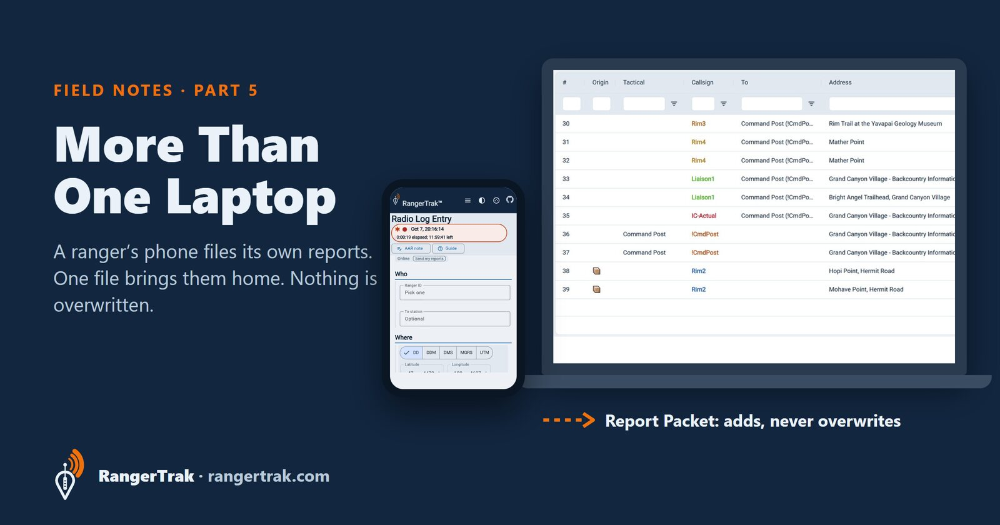
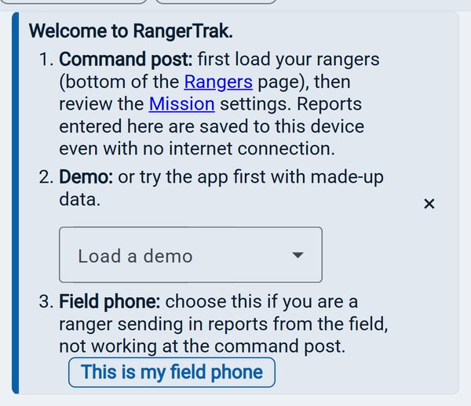
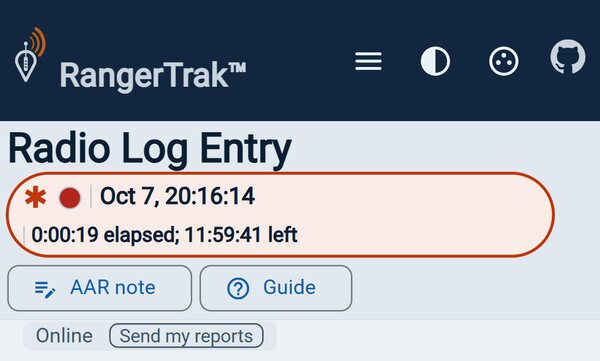
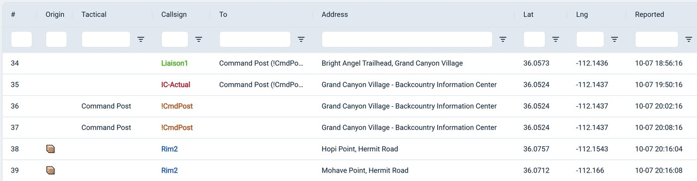
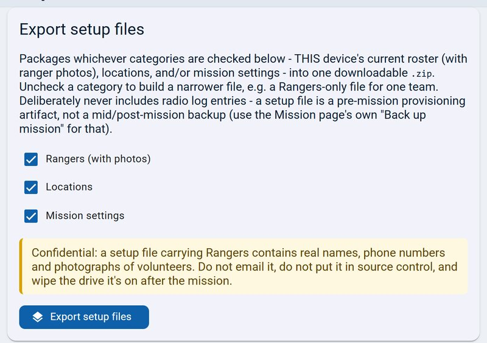

Field Notes · Part 5
More Than One Laptop

RangerTrak is a free, open-source radio log and map for the scribe at a CERT, ACS/ARES, SAR or wildland-fire command post. Log who, where, when and what off the radio; it maps them. It works offline once set up, and prints the Form 309 Communications Log and the ICS-213. I built it. It’s AGPL and will stay free. Try it at rangertrak.org, no account or install needed.
Every post so far has assumed one device: a scribe, a laptop, a radio. That’s still the heart of RangerTrak. But real incidents aren’t always that tidy. A ranger may carry a phone that could log its own reports. A new laptop may need setting up before the mission starts. The Incident Commander may want to see the log without standing over the scribe. None of that changes what RangerTrak is: still no account, and no server you have to sign up for. But it does mean devices sometimes need to pass things to each other. Here are the three ways that works today, with the limits of each.
A ranger’s own phone


On a brand-new phone or tablet, the welcome panel offers a third choice: This is my field phone. Pick it and the app gets deliberately smaller. Entry and Help are the only pages left, because a ranger in the field has no use for the roster, the map or the mission settings. (On a laptop, the same choice is under Mission → Advanced → Field phone.) It’s only offered on an empty device, and if someone picks it by mistake, Turn off field mode on the Help page brings every page back.


A field phone shows a small Online or Offline badge above the form. That only means the phone has some connection. It doesn’t mean anything you send will arrive, and the phone gets no receipt. If a report is urgent or needs an answer, read it over the radio, as always. Next to the badge, Send my reports puts every report on the phone into one small file and opens the phone’s share sheet, the same one you’d use for a photo: email, a text, AirDrop or Quick Share to a laptop nearby. Every report is saved on the phone the moment it’s submitted, signal or not. Sending is a separate, later step, so with no signal you just send later. Nothing is lost by waiting.
Getting reports back in: the Report Packet


At the command post, the other half is on the Radio Log page, in the Report Packet card. Load Report Packet reads the file in and merges it, and “merges” is the important word: it only ever adds reports this device doesn’t already have. Nothing is replaced or overwritten. Reports already in the log are skipped, so loading the same file twice does no harm; if you’re not sure a file made it in, load it again. A report that can’t be read (a bad time or position, usually a sign the file was damaged) is left out on its own, and you’re told how many, rather than the whole file being refused. Build Report Packet does the same job the other way, from any device to another.
Each report that arrived this way carries a small 📦 marker in the Origin column, so you can always tell it apart from one typed at the table. The file names real people at a real incident, and says so at the top. Treat it like a page torn out of the log: keep it on a device you control, and delete it once its reports are in.
Setting up a new device before the mission


Report Packets move reports during a mission. Setup files, a button on the Rangers page, solve a different problem: getting a new laptop or tablet ready before there’s a mission. A setup file is any mix of this device’s roster (with photos), its places and its mission settings, in one .zip file. It never carries reports. That’s the difference from Mission’s Back up mission, which saves everything, reports included.
Loading a setup file merges too. A ranger or location that matches one already on the device is updated, and everything else stays. Mission settings, if the file has them, replace the old ones. You can load several files at once; they’re applied in filename order, so name them 01-rangers, 02-locations and so on to decide which wins. Photos are shrunk on the way in, because the app only ever shows them small. And because a roster file holds names, phone numbers and photos, the app says plainly not to email it. Hand it over on a USB stick and wipe the stick afterwards.
A live view for the command post, and its real limits

The last piece is optional: the RangerTrak Board. It lets other people on the command post’s WiFi or hotspot watch the live comms log in a browser on their own phone, tablet or laptop. It’s a read-only view, not shared editing; reports still go into the log only at the device filing them. It’s off by default, and your own copy of the mission is the same either way.
I want to be straight about this one, because it’s easy to oversell. The Board is a small
program that runs on a laptop at the command post, and today you start it from
RangerTrak’s source code, which needs someone comfortable with a command line. A phone can
send its log to the Board, and anyone can view it, but a phone can’t run it. It uses
https:// with its own certificate, so the first time each device opens its address the
browser says the connection isn’t private. That’s expected, the same warning most home
routers show on their setup page. Click through it once on every device, before turning
on Send this log to a RangerTrak Board; skipping that is the most common reason
nothing shows up. There’s no password on the view page in this version:
anyone who can join that WiFi can read the log, so the WiFi password is the real lock. The roster
never goes to the Board. Viewers see call signs, not names, phone numbers or photos.
Try it in ten minutes
- On a phone, open rangertrak.org on an empty device (a private browser tab works) and tap This is my field phone.
- Log two reports, then tap Send my reports and send the file to your laptop however is easiest: email, AirDrop, Quick Share.
- On the laptop, open Radio Log → Load Report Packet and pick the file. Look for the 📦 marker on the new rows. Then load the same file again and see that nothing doubles.
- If you’re comfortable with a command line and have a spare laptop, Help on the Mission page walks through starting a RangerTrak Board.
Rather be led through it? Module 9 of the RangerTrak Tour Guide, Reports shared from the field, walks you through it hands-on. New to RangerTrak? Start the tour.
Tell me
- Try two devices at your next tabletop, even a short one. Where did the handoff break: the share step, finding the file on the laptop, or something else?
- Do your rangers carry phones with data, or not? And would they log on them, or is the radio always the way reports come in?
- Would a live view with no password of its own be acceptable at your incidents, or does that need to change before you’d use it?
Use the feedback form (start with “Blog 5”), Help → feedback inside the app, or email RangerTrak [at] steadyeoc [dot] com. Tell me which phone and browser you tried; that’s exactly the detail I need.
The series
- The Paper Log, Without the Paper
- Hot, Warm, Cold
- However They Read It Out: coordinates and maps
- From Radio Log to Form 309 and ICS-213
- More Than One Laptop (this post)
- What’s Missing, and Who Decides
- Your Roster Is Already in a Spreadsheet
- Shift Change: Op Periods, Scribes and Laptops
- After the Mission: Summaries, AAR and the Final Report
- Field Phones, Up Close
- RangerView
- People, Teams and Places: help me get this right
Next: What’s Missing, and Who Decides. The gaps I haven’t closed yet, stated plainly, what will always stay free, and an invitation to try it in a real exercise.